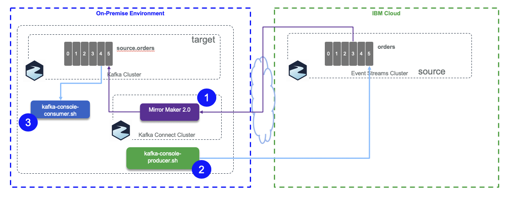

Mirror Maker 2.0
Mirror Maker 2.0 is the new replication feature of Kafka 2.4.
The mirror-maker-2 folder includes, scripts, code and configurations to support the different topic replication scenarios we want to validate:
- Replicate from Event Streams on cloud being source cluster to local Kafka cluster running on local machine (started via docker-compose) using Strimzi Kafka docker image.
- Replicate from Strimzi Kafka cluster running on OpenShift to Event Streams on Cloud. (See detail in this section)
General concepts
As Mirror maker 2.0 is using kafka Connect framework, so we recommend to review our summary in this note.
The figure below illustrates the mirror maker internal components running in Kafka Connect.

As Mirror maker is running Kafka Connect in distributed mode, it creates the following topics on the the target cluster:
- mm2-configs.source.internal: This topic will store the connector and task configurations.
- mm2-offsets.source.internal: This topic is used to store offsets for Kafka Connect.
-
mm2-status.source.internal: This topic will store status updates of connectors and tasks.
-
White listed topics is set with the
.topicsattribute and use Java regular expression syntax. - Blacklisted topics: by default the following pattern is applied
blacklist = [follower\.replication\.throttled\.replicas, leader\.replication\.throttled\.replicas, message\.timestamp\.difference\.max\.ms, message\.timestamp\.type, unclean\.leader\.election\.enable, min\.insync\.replicas]
Internally MirrorSourceConnector and MirrorCheckpointConnector will
create multiple tasks (up to tasks.max), MirrorHeartbeatConnector
creates only one single task. MirrorSourceConnector will have one task per topic-partition to replicate, while MirrorCheckpointConnector will have one task per consumer group. The Kafka connect framework uses the coordinator API, with assign API and so there is no consumer group while fetching data from source topic. There is no call to commit() neither: the rebalancing occurs only when there is a new topic created that matches the whitelist pattern.
From Event Streams to local cluster
For the second tests the source is Event Streams on IBM Cloud:

This time the producer adds headers and message and Mirror maker need to get the APIkey, so the mirror-maker.properties looks like:
clusters=source, target source.bootstrap.servers=broker-3-qnprtqnp7hnkssdz.kafka.svc01.us-east.eventstreams.cloud.ibm.com:9093,broker-1-qnprtqnp7hnkssdz.kafka.svc01.us-east.eventstreams.cloud.ibm.com:9093,broker-0-qnprtqnp7hnkssdz.kafka.svc01.us-east.eventstreams.cloud.ibm.com:9093,broker-5-qnprtqnp7hnkssdz.kafka.svc01.us-east.eventstreams.cloud.ibm.com:9093,broker-2-qnprtqnp7hnkssdz.kafka.svc01.us-east.eventstreams.cloud.ibm.com:9093,broker-4-qnprtqnp7hnkssdz.kafka.svc01.us-east.eventstreams.cloud.ibm.com:9093 source.security.protocol=SASL_SSL source.ssl.protocol=TLSv1.2 source.sasl.mechanism=PLAIN source.sasl.jaas.config=org.apache.kafka.common.security.plain.PlainLoginModule required username="token" password="985..."; target.bootstrap.servers=kafka1:9092,kafka2:9093,kafka3:9094 # enable and configure individual replication flows source->target.enabled=true source->target.topics=orders
From Kafka local as source to Event Streams on Cloud as Target
We have created an Event Streams cluster on Washington DC data center. We have a Strimzi Kafka cluster defined in Washington data center in a OpenShift Cluster. As both clusters are in the same data center, we deploy Mirror Maker 2.0 close to target cluster (Event Streams on Cloud).

What needs to be done:
- Get Broker list and API Key for Event Streams service on cloud using the service credentials.
- Get a Openshift cluster in the same data center as Event Streams service.
- Create a project in OpenShift: MirrorMakerToES.
- Deploy Kafka cluster and topic Strimzi operators. See the note here to do so
- Define source and target cluster properties in mirror maker properties file
- Add this properties file as a ConfigMap in OpenShift
oc create configmap mm2properties --from-file kafka-to-es-mm2.properties
The filename becomes a key stored in the data section of the ConfigMap.
apiVersion: v1 data: kafka-to-es-mm2.properties:
- Deploy Mirror maker 2.0 pod within this project
oc apply -f mm2-pod.yaml
- Define a secret for the API key of the target cluster
oc create secret generic es-apikey-target --from-literal=binding=am_ - Start a producer (for example the below code send products reference data into products topic)
export KAFKA_PWD="replace-with-event-streams-apikey" export KAFKA_BROKERS="..." docker run -ti -v $(pwd):/home --rm -e KAFKA_PWD=$KAFKA_PWD -e KAFKA_BROKERS=$KAFKA_BROKERS jbcodeforce/python37 bash python SendProductToKafka.py
- Define a source cluster properties file with truststore and bootstrap servers. This file is used for the different Kafka tools like kafka-topics.sh or console producer and consumer.
bootstrap.servers=.... security.protocol=SSL ssl.truststore.password=password ssl.truststore.location=/home/truststore.jks
and a target cluster property file:
bootstrap.servers=broker-3-q.kafka.svc01.us-east.eventstreams.cloud.ibm.com:9093,broker-4-q.kafka.svc01.us-east.eventstreams.cloud.ibm.com:9093 security.protocol=SASL_SSL ssl.protocol=TLSv1.2 sasl.mechanism=PLAIN sasl.jaas.config=org.apache.kafka.common.security.plain.PlainLoginModule required username="token" password="am_...";
-
Start a product producer with a python client code
-
Start a consumer locally on your compute using the Strimzi/kafka image.
docker run -ti -v $(pwd):/home strimzi/kafka:latest-kafka-2.4.0 bash cd /opt/kafka/bin ./kafka-console-consumer.sh --bootstrap-server my-cluster-kafka-bootstrap-jb-kafka-strimzi.gse-eda-demos-fa9ee67c9ab6a7791435450358e564cc-0001.us-east.containers.appdomain.cloud:443 --consumer.config /home/strimzi.properties --topic products
- Verify the created topics on target cluster (Event Streams)
/opt/kafka/bin/kafka-topics.sh --bootstrap-server $KAFKA_BROKERS --command-config /home/eventstream.properties --list
- In case you need it... looking at source cluster topic list:
/opt/kafka/bin/kafka-topics.sh --bootstrap-server my-cluster-kafka-bootstrap-jb-kafka-strimzi.gse-eda-demos-fa9ee67c9ab6a7791435450358e564cc-0001.us-east.containers.appdomain.cloud:443 --command-config /home/strinzi.properties --list
Get detail on one topic:
/opt/kafka/bin//kafka-topics.sh --bootstrap-server my-cluster-kafka-bootstrap-jb-kafka-strimzi.gse-eda-demos-fa9ee67c9ab6a7791435450358e564cc-0001.us-east.containers.appdomain.cloud:443 --command-config /home/strimzi.properties --describe --topic products
From Event Streams On Cloud to Strimzi Cluster on Openshift
From Kafka cluster on Openshift cluster to local cluster

The source cluster is a Strimzi cluster running on Openshift as a service on IBM Cloud. It was installed following the instructions documented here.
The target cluster is also based on Strimzi kafka 2.4 docker image, but run in a local host, with docker compose. It starts two zookeeper nodes, and three kafka nodes. We need 3 kafka brokers as mirror maker created topics with a replication factor set to 3.
-
Start the target cluster runnning on your laptop using:
docker-compose up
-
Start mirror maker2.0:
By using a new container, start another kakfa 2.4+ docker container, connected to the brokers via the
kafkanetnetwork, and mounting the configuration in the/home:docker run -ti --network kafkanet -v $(pwd):/home strimzi/kafka:latest-kafka-2.4.0 bash
Inside this container starts mirror maker 2.0 using the script:
/opt/kakfa/bin/connect-mirror-maker.sh/opt/kakfa/bin/connect-mirror-maker.sh /home/strimzi-mm2.properties
The
strimzi-mm2.propertiesproperties file given as argument defines the source and target clusters and the topics to replicate:clusters=source, target source.bootstrap.servers=my-cluster-kafka-bootstrap-jb-kafka-strimzi.gse-eda-demos-fa9ee67c9ab6a7791435450358e564cc-0001.us-east.containers.appdomain.cloud:443 source.security.protocol=SSL source.ssl.truststore.password=password source.ssl.truststore.location=/home/truststore.jks target.bootstrap.servers=kafka1:9092,kafka2:9093,kafka3:9094 # enable and configure individual replication flows source->target.enabled=true source->target.topics=orders
As the source cluster is deployed on Openshift, the exposed route to access the brokers is using TLS connection. So we need the certificate and create a truststore to be used by those Java programs. All kafka tools are done in java or scala so running in a JVM, which needs truststore for keep trusted TLS certificates. When running from a remote system to get the certificate do the following steps:
-
Get the host ip address from the Route resource
oc get routes my-cluster-kafka-bootstrap -o=jsonpath='{.status.ingress[0].host}{"\n"}'
-
Get the TLS certificate from the broker
oc get secrets oc extract secret/my-cluster-cluster-ca-cert --keys=ca.crt --to=- > ca.crt
-
Transform the certificate fo java truststore
keytool -import -trustcacerts -alias root -file ca.crt -keystore truststore.jks -storepass password -noprompt
For Openshift or Kubernetes deployment, the mirror maker descriptor needs to declare the TLS stamza:
mirrors: - sourceCluster: "my-cluster-source" targetCluster: "my-cluster-target" sourceConnector: config: replication.factor: 1 offset-syncs.topic.replication.factor: 1 sync.topic.acls.enabled: "false" targetConnector: tls: trustedCertificates: - secretName: my-cluster-cluster-cert certificate: ca.crt
-
-
The consumer may be started in second or third step. To start it, you can use a new container or use one of the running kafka broker container. Using the
Docker perspectivein Visual Code, we can get into a bash shell within one of the Kafka broker container. The local folder is mounted to/home. Then the script,consumeFromLocal.sh source.orderswill get messages from the replicated topic:source.orders -
Finally start the producer in another kafka broker shell
/home/produceToStrimzi.sh orders
Typical errors in Mirror Maker 2 traces
- Plugin class loader for connector: 'org.apache.kafka.connect.mirror.MirrorCheckpointConnector' was not found.
- Error while fetching metadata with correlation id 2314 : {source.heartbeats=UNKNOWN_TOPIC_OR_PARTITION}:
- Those messages may come from multiple reasons. One is the topic is not created. It can also being related to the fact the consumer polls on a topic that has just been created and the leader for this topic-partition is not yet available, you are in the middle of a leadership election.
- The advertised listener may not be set or found.
- Exception on not being able to create Log directory: do the following:
export LOG_DIR=/tmp/logs - ERROR WorkerSourceTask{id=MirrorSourceConnector-0} Failed to flush, timed out while waiting for producer to flush outstanding 1 messages
- ERROR WorkerSourceTask{id=MirrorSourceConnector-0} Failed to commit offsets (org.apache.kafka.connect.runtime.SourceTaskOffsetCommitter:114)